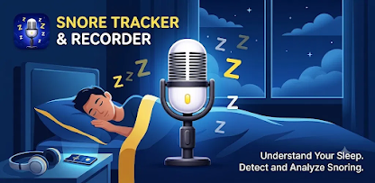

Snore Tracker & Recorder
Understand your sleep,
one night at a time.
Silent when you're silent. It wakes up the moment you don't — capturing, scoring, and replaying every snore so you know exactly what happened after lights out.

Built for the hours you don't remember
Three things it does while you sleep.
Listens
Snore-gated recording
Stays quiet through the quiet parts. Recording only kicks in when it actually detects snoring, so you're not left combing through hours of silence.
Scores
A number for the night
Every session gets a snore intensity score and a heatmap, so you can see at a glance whether last night was rough or restful.
Plays back
Hear it for yourself
Jump straight to the moments that mattered. Full in-app playback means you don't have to take our word — or anyone else's — for it.